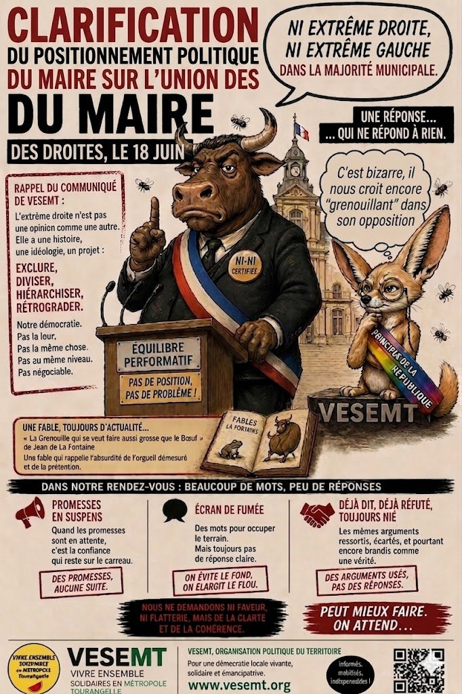

Chez certains responsables politiques, répondre à une question simple devient un art martial. Pas le judo, non. Une discipline plus rare : l’esquive acrobatique avec réception sur élément de langage.
Le précédent communiqué de VESEMT (à retrouver sur notre Facebook et là : https://vesemt.org/?p=542) avait déjà reçu une première réponse orale lors de la rencontre du 22 avril 2026 avec Olivier Conte, maire de Saint-Pierre-des-Corps.
Et pendant cette rencontre, le scénario était toujours le même : quand une question devenait précise, la réponse devenait floue. Quand le sujet devenait sérieux, on partait faire un tour en périphérie. Et plus on approchait du fond, plus la discussion prenait la sortie de secours.
Mais au milieu de tous ces détours, une question restait centrale : Monsieur Conte considère-t-il acceptable qu’une recomposition politique de droite puisse inclure, banaliser ou s’allier avec des forces issues de l’extrême droite ?
Ce n’est ni une caricature, ni un procès d’intention. C’est une question politique concrète. Parce qu’Olivier Conte appartient au mouvement « Nouvelle Énergie » de David Lisnard, un mouvement où les discussions autour d’une « union des droites » avec l’extrême droite ne sont plus des fantasmes de café du commerce mais des débats désormais assumés.
Face à cette question, la réponse donnée le 22 avril fut : « Ni extrême gauche, ni extrême droite. »
La fameuse phrase magique. Le “dos à dos” universel. Le spray anti-débat. Le problème, c’est que personne ne lui demandait de commenter l’équilibre cosmique des extrêmes sur CNEWS. La question était pourtant simple : Est-ce qu’une alliance avec l’extrême droite est acceptable, oui ou non ? C’est une question fermée. Normalement, ça se répond avec deux mots maximum. Pas avec un brouillard philosophique.
Après cette rencontre, VESEMT a donc envoyé un courrier écrit afin d’obtenir enfin une clarification publique.
La réponse officielle du maire est alors arrivée : « Bonjour, J’en prend acte.. Cordialement» (transcription fidèle)
« J’en prend acte» : Trois mots. Aucun positionnement clair. Aucune condamnation explicite. À force d’éviter de répondre, l’ambiguïté finit par devenir une position politique en elle-même.
Trois mots. Même les notifications SNCF donnent plus d’informations. Pas de précision. Pas de condamnation claire. Pas même une tentative d’explication. Après l’esquive orale, voici maintenant l’esquive homologuée version administrative.
Parce qu’à un moment, il faut regarder les choses en face : quand un responsable politique estime qu’il est plus dangereux de condamner clairement l’extrême droite que de laisser volontairement planer le doute… ce silence devient lui-même une position politique.
VESEMT refuse de traiter cette ambiguïté comme un simple détail de communication.
L’Histoire nous a déjà montré comment commencent les glissements démocratiques. Rarement avec des tambours. Rarement avec des slogans géants. Souvent avec des prudences calculées. Des phrases molles. Des responsables politiques qui regardent leurs chaussures quand il faut fixer des limites.
Nous posons donc publiquement une affirmation :
Monsieur Olivier Conte devrait affirmer clairement le 18 juin qu’ « aucun élu, aucun partenaire politique et aucune sensibilité liée ou issue de l’extrême droite n’ont aujourd’hui, et n’auront demain, leur place au sein de sa majorité municipale ou dans les alliances politiques qu’il soutient » : Les habitantes et habitants de Saint-Pierre-des-Corps méritent une réponse claire.
A Saint-Pierre-des-Corps le 21/05/2026.
Le Comité Populaire et néanmoins bienveillant de Vivre (surtout) Ensemble et (si possible) Solidaires en Métropole Tourangelle (VESEMT).
Commentaires